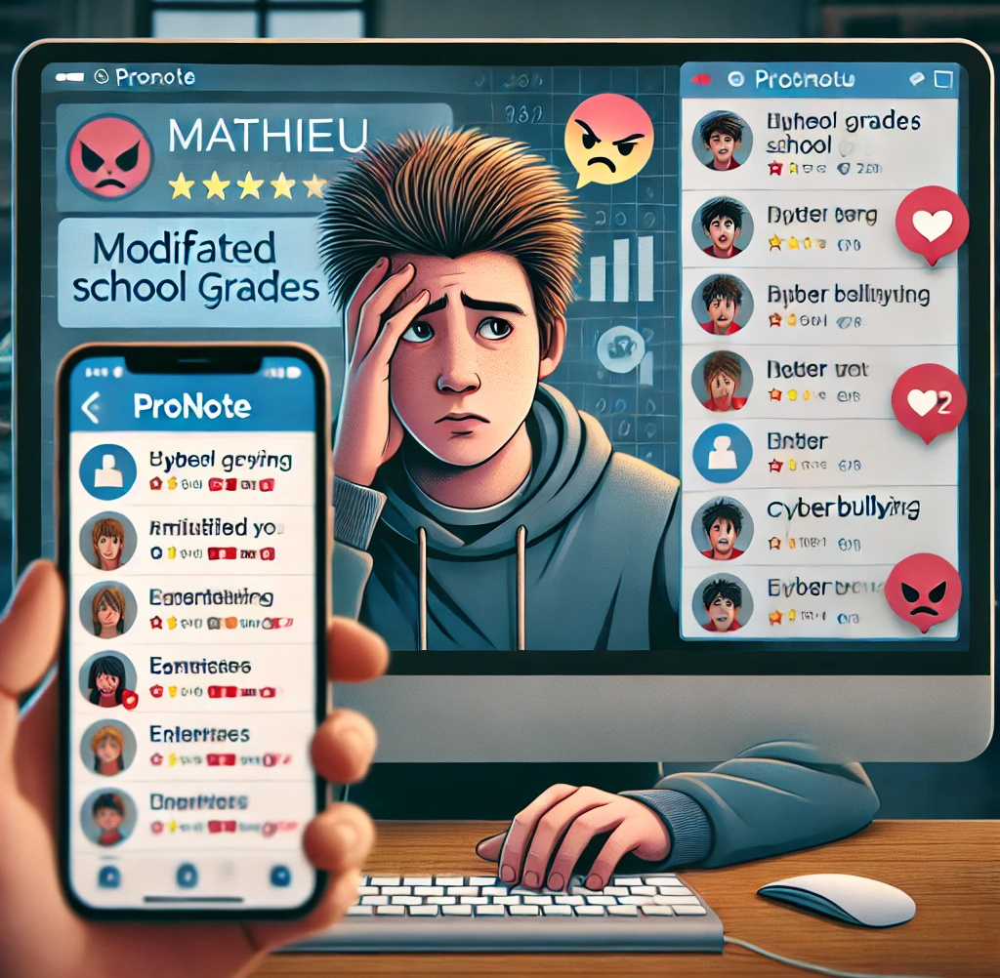
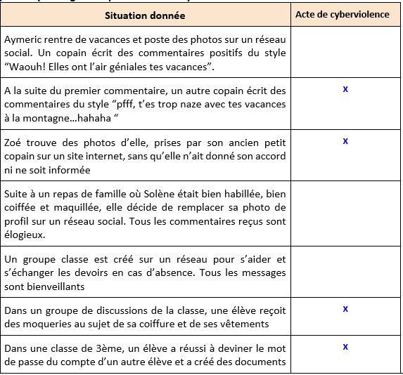
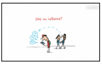
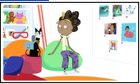
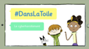

Séance 3 (correction) : Agir face à la cyberviolence
Séance 3: Agir face à la cyberviolence

Situation déclenchante
Mathieu a expliqué à ses amis que quelqu’un avait piraté son compte Pronote pour récupérer son bulletin et modifier les appréciations pour se moquer de lui sur les réseaux sociaux.
Un de ses amis lui explique que c’est très grave et que c’est de la cyberviolence. Mais Mathieu ne sait pas vraiment si cette situation fait partie de la cyberviolence.
Mes constats, mes observations :
Mon problème à résoudre :
Comment définir la cyberviolence ? Comment la reconnaître ?
Mes idées pour résoudre le problème:
Connaître la définition pour identifier ces situations
Activité 1 (niveau 1 et 2) - Définir et reconnaître une situation de cyberviolence, une usurpation d’identité
N1.1 Parmi les définitions ci-dessous, cocher la bonne définition de la cyberviolence
▣ Actes malveillants commis par le biais des technologies numériques, tels que les insultes, les menaces, le harcèlement ou la diffusion de photos et vidéos privées.
◻ La cyberviolence est définie comme l'utilisation d'outils numériques pour célébrer et féliciter les personnes.
N1.2 Parmi les définitions ci-dessous, cocher la bonne définition de l’usurpation d’identité :
▣ Utilisation de l’identité d’une personne sans son consentement pour commettre des actes malveillants.
◻ Utilisation d’une photo d’une personne sans son accord pour illustrer un document.
N1.3 Parmi les définitions ci-dessous, cocher la bonne définition de l'usage détourné :
◻ Utilisation de l’identité d’une personne sans son consentement pour commettre des actes malveillants
▣ Utilisation d'une image, d'une substance ou d'une information dans un but autre que celui pour lequel il a été conçu ou prévu.
N2 En lisant les situations inscrites dans le tableau ci-dessous, mets une croix si tu penses qu’il s’agit d’un phénomène de cyberviolence

Ressources
Vidéo ressource
https://www.lumni.fr/video/c-est-quoi-le-cyberharcelement

Ressources
Vidéo ressource
https://www.lumni.fr/video/les-fausses-identites

Activité 3 (niveau 3 et 4) Expliquer un phénomène de cyberviolence et mettre en place une procédure pour réagir contre des faits de cyberviolence
N3 Dans la situation déclenchante, est-ce que la situation vécue par Mathieu est de la cyberviolence ?
Oui, c’est une situation de cyberviolence parce qu’il s’agit ici d’une usurpation d’identité utilisée pour insulter une personne par le biais d’une technologie numérique.
N4 Que dois-tu faire lorsque tu es victime ou témoin d’une situation de cyberviolence ?
On demande à l’auteur des faits d’arrêter
On éteint son téléphone et on se coupe d’internet
On demande de l’aide à ses parents, aux adultes en qui on a confiance et aux responsables qui peuvent agir à l’école.
On conserve les preuves pour obtenir qu’il soit puni par la loi
Si on est témoin, on alerte les adultes et on soutien la victime pour qu’elle ne se sente pas seule
Ressources
Vidéo ressource
https://www.lumni.fr/video/le-cyberharcelement

Ma Synthèse
La cyberviolence désigne l'utilisation des technologies numériques pour agresser ou nuire à autrui. Elle peut prendre diverses formes : usurpation d'identité, harcèlement en ligne, diffusion de contenus humiliants, usage détourné etc.
Pour se protéger, il faut adopter des comportements responsables en ligne :
● Ne pas partager d'informations personnelles sur les réseaux sociaux.
● Ne pas répondre aux messages haineux.
● Signaler les abus aux autorités compétentes mais aussi parents, adultes de confiance, encadrement des établissements scolaires…
En tant que témoin, soutenir la personne victime.
Fiche connaissance
https://drive.google.com/file/d/1mERcoAG9HvKeAbNABqasD1VJix7gN9AP/view?usp=sharing